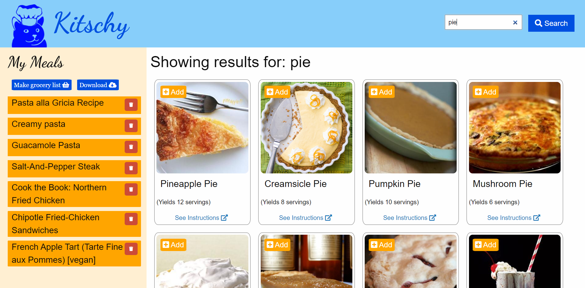
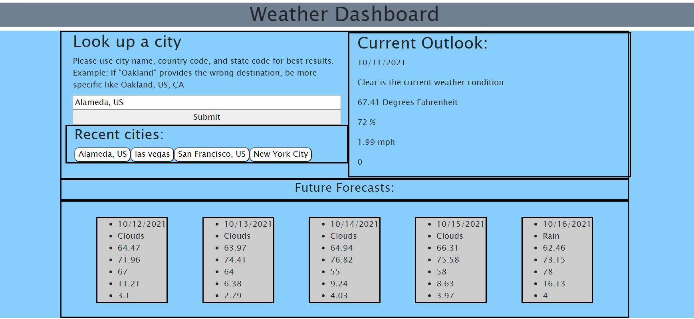
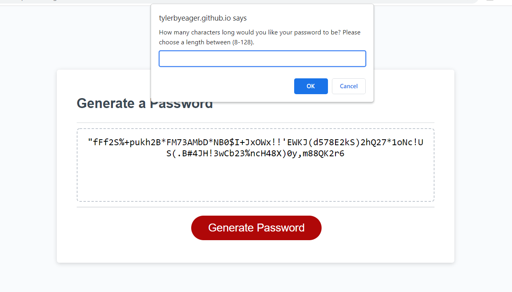

How to Contact Me
If you feel I would make a great fit at your company then please feel free to get in touch by clicking any of the links below or make note of my personal cell number and email.


My name is Tyler Brian Yeager. I am 28 years old and currently living in the East Bay area while enrolled with UC Berkeley's fulltime Full-Stack Coding Bootcamp. My degree is in Anthropology as I had originally planned to take my career towards archaeology. While that is still very much a passion for me, I found myself taking a different career path and, for the last three years, have worked as a Park Ranger for the Bureau of Land Management. My experience as a ranger was incredible as I was given an amazing opportunity to see new places and meet individuals of different background. However, since moving to this area I have found myself increasingly more interested in the world of software development and, for nearly a month and a half, have been emersed in the most intense educational program I think I have ever done. Each project is a challenge that I welcome and I look forward to learning more and working for a great company very soon.
Since beginning my coding journey with the bootcamp prework in mid-august, I have learned more about coding than I ever thought possible. The work is intense and the entire program challenges me in every way possible but I am able to consisitently look back and see just how far I have come. Recently, I had the priviledge of working with two amazing individuals to create an app that we have titled "Kitschy: Your Favorite Kitchen Helper App". Please take a moment to check it out along with two other projects that I am very proud of.
Kitschy is the culmination of many long hours of work with two incredible skilled fellow students. Kitschy began with the singular purpose of making shopping/meal-prepping a much easier experience for our users. The idea is that a user can search thousands of recipes, add their favorites, and, with a click of a button, generate a shopping list that combines all like ingredients between the recipes into a singular amount. Instead of having to worry about if one recipe needs two pounds of chicken and another needing six, Kitschy can tell our users the grand total amount they will need to get at the store in order to create each and every one of their saved meals. In addition, we were able to use Google Firebase to create a cloud sharing feature that will allow users to share shopping lists between friends, family members, roommates, or whomever else might want to use it.
This project is pretty simple in function and design. I wanted to practice using the Bootstrap css framework and so I used this project as an excuse to do exactly that. I'll be the first to admit, it isn't a visually appealing app. However, the work that went into figuring out how to get the information I needed from two api calls and then dynamically displaying that information to a user was such a fun challenge. I fully intend to revist this project in the future and improve upon the design and clean up the code.
Modifying a bit of starter code in order to create a functioning password generator. I have actually used this to create a few passwords for myself now. Additionally, this project ended up teaching me about Math.Floor and Math.Random which proved a great resource in randomly generating letters and symbols.
If you feel I would make a great fit at your company then please feel free to get in touch by clicking any of the links below or make note of my personal cell number and email.